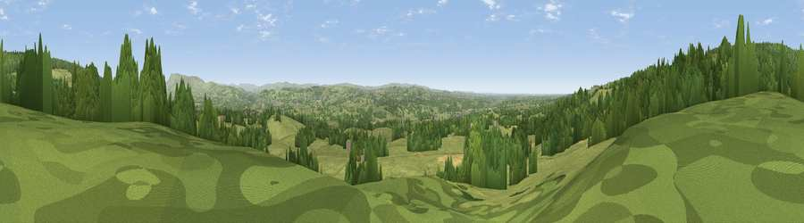

Viewpoint near Hurst Green
#14589 in England · top 38% of its area beats it · near Hurst Green · path 129 mWhere it is
The exact computed spot (SD 66675 38825). Click the marker for map links.
Public access: the nearest public right of way is about 129 m away — the final stretch may cross private land. Computed from Natural England's CRoW access layer and OpenStreetMap rights of way — not the legal definitive map. Always verify locally.
The view, rendered

A 360° render of this exact spot computed from the terrain model, tree cover and land cover — summer colours, afternoon light, calibrated against photographs of famous viewpoints. Real trees, hedges and buildings will differ in detail.
The panorama
Grey silhouette: terrain skyline in each direction (720 bearings, Earth curvature and refraction included). Dashed green: skyline with trees (+15 m) and buildings (+8 m) as obstacles. Blue strip: how far the ground is visible on each bearing.
Where the view opens
Wedge length = distance to the farthest visible ground on that bearing (vegetation-aware). Rings at 10, 25 and 50 km.
What fills the view
71% grassland · 25% woodland · 2% built-up · 2% cropland
Angular shares of the visible panorama (visual magnitude), not map area. Landscape diversity 0.33 (0–1 Shannon).
Key numbers
More beautiful places nearby
The staircase of upgrades: each row has a higher view potential than everything closer. Driving times are estimates from straight-line distance, calibrated against real road routing — check an actual route before setting out.
| Place | Direction | Drive | Score |
|---|---|---|---|
| Viewpoint near Hurst Green | NW · 0 km | ~1 min | 64.2 |
| Viewpoint near Chipping | NNW · 2 km | ~6 min | 69.2 |
| Viewpoint near Chipping | NNW · 3 km | ~6 min | 70.1 |
| Viewpoint near Chipping | NW · 3 km | ~7 min | 73.4 |
| Viewpoint near Chipping | WNW · 3 km | ~8 min | 73.6 |
| Parlick | NW · 9 km | ~18 min | 77.5 |
| Darwen Hill | S · 17 km | ~30 min | 80.7 |
| Rivington Pike | S · 25 km | ~41 min | 81.9 |
53.84459, -2.50798 · source: screening · position refined by local search. Computed location — check access rights before visiting.